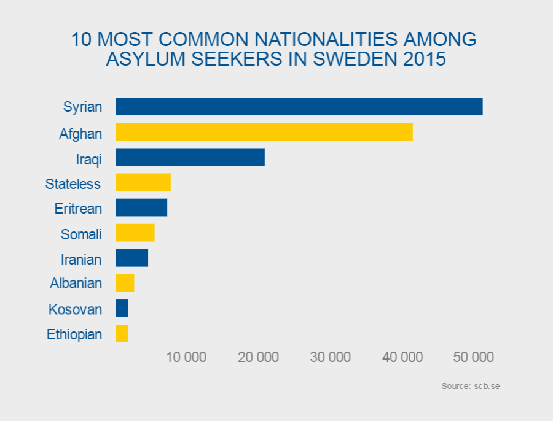
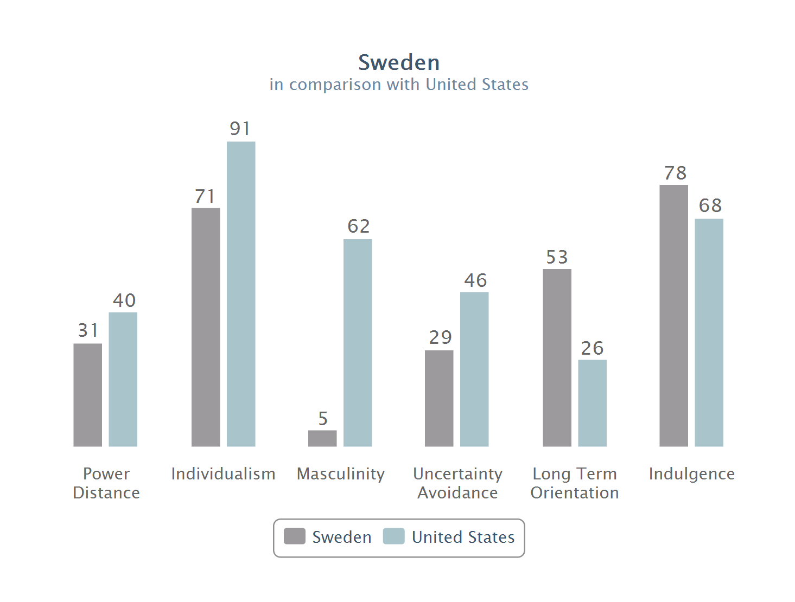
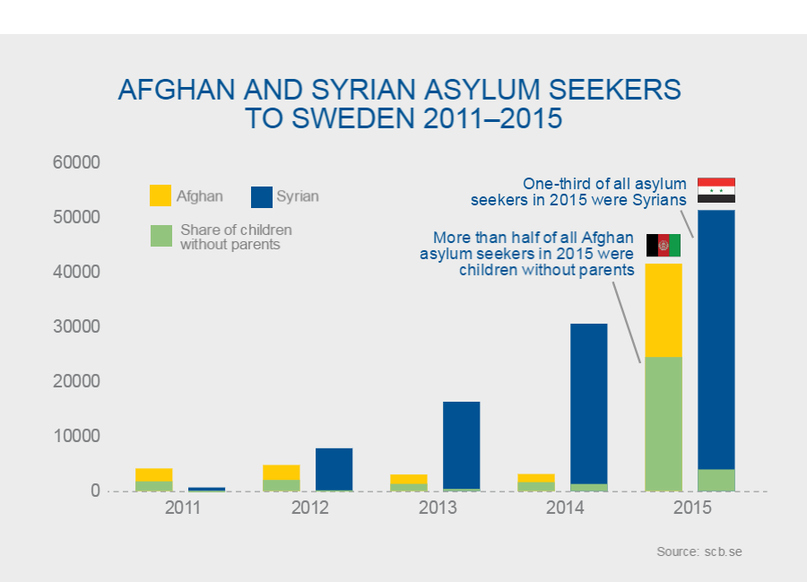

Sweden, a historically welcoming country to asylum seekers, faced a crisis beginning in 2015 when over 160,000 people sought asylum within the country. The massive influx of refugees, negative international press, and concerns of the Swedish publics prompted Sweden to pass immigration restrictions. Sweden needed to maintain its image as a humanitarian and social welfare leader in the face of this crisis. To do this, Sweden used strategies from the Image Repair Theory in its official communications.
For the graduate aspect of International/Multicultural Public Relations, I had to research and report about an international organization and how they communicated in a time of crisis. I chose to look into how the Swedish Government communicated both to internal and external publics during the Swedish Refugee Crisis of 2015. I also presented an hour-long lecture on the topic in class. From this extensive look into Swedish communication, from official government press releases and speeches to local newspaper reports and blogs, I was able to determine if Sweden's use of the Image Repair theory of public relations was effective. The complete paper is available here.
"Throughout the Swedish Government’s messaging on the refugee crisis, there are common themes of bolstering, transcendence, defeasibility, shifting blame and corrective action. Sweden used four of the five strategies of the Image Repair Theory to communicate with their publics in response to this crisis."
This case analysis provides the grounds to make the prediction that the consistent messaging and use of Image Repair tactics will prove to be successful in maintaining Sweden’s reputation as a welcoming country for refugees, and one of the foremost nations for immigration policies and social welfare systems.